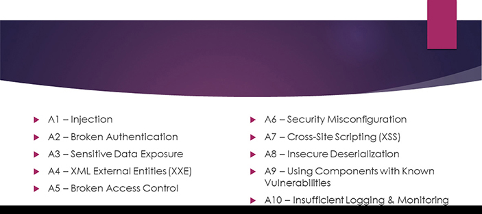
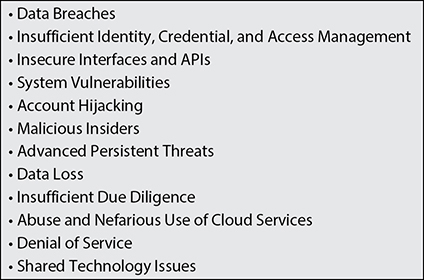

CHAPTER 5
Cloud Application Security
This chapter covers the following topics in Domain 4:
• The knowledge needed when considering application deployment in a cloud environment
• Common pitfalls within a cloud environment
• Security and functional testing of applications within a cloud
• The software development lifecycle and how it relates to a cloud project
• Cloud-specific risks and threat models
• Supplemental security devices
• Federated identity systems
• Single sign-on and multifactor authentication
Cloud application development is rapidly increasing in popularity and prevalence. In order for an organization to make informed choices with regard to cloud computing and its specific needs and requirements, the organization needs a well-educated Cloud Security Professional who understands the most common challenges and issues with cloud development. Many of the methodologies and approaches for security scanning and testing are similar between a cloud environment and a traditional data center, but due to levels of access and the controls in place by cloud providers, these methodologies and approaches are not always feasible to the level required and expected.
Advocate Training and Awareness for Application Security
Before we get into cloud software and application development and implementation, it is important for you to understand some basics about how cloud applications operate, as well as some common pitfalls of getting into cloud development or migrating to a cloud environment from a traditional data center. The Cloud Security Professional needs a strong understanding of the common vulnerabilities facing cloud applications in order to properly advise on and enforce security policies and best practices throughout the software development lifecycle.
Cloud Development Basics
A major difference between cloud systems and their operations versus a traditional data center is that cloud systems are heavily reliant on—or in many cases, even solely reliant on—APIs (application programming interfaces) for access and functions. Two main types of APIs are commonly used: Representational State Transfer (REST) and Simple Object Access Protocol (SOAP).
REST is a software architectural scheme that applies to the components, connectors, and data conduits for many web applications used on the Internet. It uses and relies on the HTTP protocol and supports a variety of data formats, with JSON and XML being the most widely used, and it allows for caching for performance increases and scalability.
SOAP is a protocol and standard for exchanging information between web services in a structured format. SOAP encapsulates its information in what is known as a SOAP envelope and then leverages common communications protocols for transmission. The most common and prevalent protocol used is HTTP, but others such as FTP are also possible. Unlike REST, SOAP only allows for the use of XML-formatted data, and it also does not allow for caching, leading to lower performance and less scalability when compared to REST. SOAP is most commonly used where design or technical limitations make the use of REST impossible.
Common Pitfalls
Developers, management, and Cloud Security Professionals need to be aware of and understand several issues and pitfalls when contemplating cloud development or moving software to a cloud environment. These issues could cause security or operations problems within the cloud environment if not properly accounted for and understood from the onset of any project plan.
Portability Issues
There is a common misconception that moving services from a traditional data center to a cloud environment is a seamless or transparent process. In many instances, systems and applications have been designed around the security controls and infrastructure for a data center. Many security controls are either supplemented or complemented by the data center infrastructure and setup, and in some cases the actual data center controls may be a significant part of how the overall security for the system or application is implemented. With a move to a cloud environment, some or all of these controls and configurations might not work or require significant reengineering to get to a comparable level.
When an analysis is undertaken to determine the possibility of moving to a cloud environment, the Cloud Security Professional should approach it with an overall mindset that an application hosted in a traditional data center was not designed with a cloud environment in mind, so it may have many features that are not transferable to a cloud environment. Cloud environments use much newer technologies, and these technologies are rapidly changing and evolving. Many legacy systems from a traditional data center are unlikely to be properly programmed or configured to work within the flexible nature and rapidly changing reality of a cloud environment. It is also unlikely that an application from a traditional data center model can simply be “forklifted” to a cloud environment, which in this case means a move with very few, if any, code changes. A forklift process may be appropriate and feasible in some cases, but one can never assume that it is or that all configurations and security controls are possible in a cloud environment.
Cloud Appropriateness
With any application security model, the underlying hosting environment is a significant portion of securing the application and plays a crucial role in the auditing and compliance of an application. Many regulatory requirements involve the underlying infrastructure and hosting environment being certified to an appropriate security level before the actual application that resides therein can be certified. With a cloud environment, such a certification may not be practical or even possible. Especially within a public cloud, the cloud provider is unlikely to be able to meet strict security requirements of many regulatory schemes, or might be unwilling to allow auditors the type and level of access that would need to be granted in order to properly certify the environment. One approach that many cloud providers may opt to take is to undergo a SOC 2 audit and make the report available to cloud customers and potential cloud customers as a way of providing security confidence without having to open their systems or sensitive information to the masses. Cloud environments are also typically focused on web-based applications that are built on modern web service frameworks and cutting-edge programming languages and platforms, and are unlikely to adequately support many legacy systems or programming languages.
Integration Challenges
In a traditional data center, the developers and administrators will have full access to all components, servers, and networking equipment to make integration of services and systems seamless and feasible. With a cloud environment (and even with IaaS), access to these types of systems and services will be severely limited, if even available at all. When attempting to do system integrations, without having full access to both systems and logs, it can be very difficult to troubleshoot or properly engineer the system designs and communications channels. The cloud customer would have to rely heavily on the cloud provider for assistance, and depending on the cloud service model and the demands of the other tenants, it might not be something the cloud provider is willing or able to do. In all likelihood, the cloud customer would have to adopt the APIs and other particular offerings and services from the cloud provider to get the most access and visibility possible, which could also lead to vendor lock-in and a decrease in portability.
Cloud Environment Challenges
With cloud environments involving rapidly evolving technologies, the focus tends to be on newer application environments and the more modern programming languages and development methodologies. When undertaking cloud development, it is imperative for an organization to ensure that it has developers and project managers who are familiar with the cloud, its particular issues and challenges, as well as the technologies and systems prevalent in a cloud environment versus traditional data centers.
Cloud Development Challenges
Typical software development lifecycle (SDLC) processes and methodologies revolve around well-documented and well-established practices and procedures. A typical organization will have its own practices that it follows and will have its internal policies and dependent processes integrated with them. With development in a new and different environment such as a cloud, those established process and procedures will likely need to be tweaked or even undergo significant overhaul to meet the unique challenges and demands of a cloud environment. The organization’s SDLC process will need to be adapted to be made “cloud aware” and to integrate those additional concerns and challenges, from the perspective of systems engineering and architecture, and most certainly additional and differing security controls and practices will need to be taken for a cloud environment.
Another big concern is making sure that the cloud environment used for development matches the intended production environment. Many organizations will use a different cloud hosting model or cloud provider for development, and those cloud environments may not offer the same toolsets and APIs as the intended production environment.
Describe the Secure Software Development Lifecycle (SDLC) Process
The SDLC process includes several steps in succession that form the framework for proper requirement gathering and analysis, design, coding, testing, and maintenance of software development projects. It also includes practices and applications for maintaining and deploying systems in a standardized and enforceable manner.
Business Requirements
With any system or software design, or even with changes to an existing one, gathering, analyzing, and understanding the business requirements is absolutely paramount to meeting organizational objectives and user expectations.
When a project is conceptualized, a thorough understanding of why it is needed, its goals, and the target audience will form the initial basis of business requirements. Getting input from as many stakeholders as possible will also increase the chances that all requirements are properly gathered and understood. If possible, potential users of the software should also be included, whether they are internal to an organization or part of the public. This will bring different perspectives and understandings for what management and internal populations are likely to expect, especially considering that the success of any software is ultimately dependent on its usability and end-user satisfaction.
Phases and Methodologies
Regardless of whether software development is being done for hosting in a traditional data center or a cloud environment, the overall steps and phases for the SDLC are the same.
Requirement Gathering and Feasibility
In the initial step, the high-level aspects of the project are gathered and specified. This includes the overall goals, the inputs available and the desired outcomes, the timing and duration of the project, the overall costs, and a cost–benefit analysis against the capabilities of current systems and the value derived from upgrading those systems versus putting in new ones. This phase should include all stakeholders of the project as well as a sample of users and management to define what the application should do. As part of this initial high-level analysis, the risks and testing requirements are also defined, as well as an overview of the technologies available and the feasibility of the overall project’s success. This step also takes into account all mandatory requirements as well as desired features and weighs the overall cost/benefit of incorporating them into the actual design. Security requirements should also be incorporated into the initial planning from the onset.

NOTE It is essential that security be included in discussions and the SDLC process from the very initial stages. Many organizations try to incorporate security in later steps rather than from the onset, which can cause project delays or increased costs if previous decisions and directions need to be corrected or readdressed.
Requirement Analysis
After the initial high-level requirements are specified and the project has been approved, the next phase is to analyze those requirements and translate them into a real project plan with specific requirements and deadlines. This plan not only spells out the specific requirements for the features and functionality of the software, but also specifies the hardware and software platform requirements that the development team will build within. At the conclusion of this stage, the formal requirements and specifications for the project will be ready for the development team to turn into the actual software.
Design
The design phase takes the formal requirements and specifications and turns them into a plan and structure for the actual software coding, translating the requirements into an actual plan that can be applied to the programming language designated for the project. At this point of the project, the formal security threats and the requirements for risk mitigation and minimization are integrated with the programming designs.
Development/Coding
At the development stage, the project plan is broken down into pieces for coding and then the actual coding is done. As the requirements are turned into actual executable programing language, testing is completed on each part to ensure that it compiles correctly and operates as intended. Functional testing is completed by the development team as each portion of code is completed and tied into the larger project as a whole. This phase is typically the longest phase of the cycle.

CAUTION Ideally, security scanning and testing should be done on sections of code as they are being developed and during incremental functional testing. Many organizations will wait until the whole package is together and then perform security scanning and testing. Doing so can lead to far greater complexity in fixes and project delays.
Testing
As part of the project design and specifications, a testing plan is also developed to ensure that all pieces are functioning properly and the desired outcome is achieved by the software. The test plan should have approval from management and include the appropriate allocation of system resources and personnel to complete the testing under the timeline established by the overall project plan. Testing is completed against the original design requirements and specifications to ensure that all objectives are met, from the perspectives of the major stakeholders and users. The testing includes security scans against the code and the completed application as it runs, as well as validations against the actual code for syntax errors and problems. As a deliverable, the testing phase will output a comprehensive results document that states any deficiencies or successes for each aspect of testing.
Maintenance
Once software has been successfully tested and put into production use, there will be continual updates for additional features, bug fixes, and security patches for the lifetime of the software. This is an ongoing and iterative process, and involves going through the overall SDLC process each time, progressing through requirements, analysis, design, coding, and testing.

EXAM TIP The exam always tends to include specific questions about the sequencing and phases of the SDLC process. Make sure that you fully understand and review them as part of your preparation process.
Part of the gathering of business requirements is establishing and articulating the critical success factors for the project. These factors include specific feature sets and functionality, but also performance metrics and security standards. The critical success factors will play directly into the testing plan and provide the basis for measurable criteria to the stakeholders as to the success of the software development project.
Apply the Secure Software Development Lifecycle
With a knowledge of what comprises the Secure SDLC process, applying it requires an understanding of cloud-specific risks and the application of threat modeling to assess those risks and the particular vulnerabilities facing an application.
Avoid Common Vulnerabilities During Development
In 2017, the Open Web Application Security Project (OWASP) updated its Top 10 Project, which identifies the most critical web application security risks. This project can be found at https://www.owasp.org/index.php/Category:OWASP_Top_Ten_Project.
The OWASP Top 10 list is shown in Figure 5-1 and described next:

Figure 5-1 OWASP Top 10 list
• A1: Injection An injection attack is where a malicious actor sends commands or other arbitrary data through input and data fields with the intent of having the application or system execute the code as part of its normal processing and queries. This can trick an application into exposing data that is not intended or authorized, or potentially allow an attacker to gain insight into configurations or security controls. For example, if an application does not properly sanitize and validate data submitted through an input field, a malicious actor could include a properly formatted SQL SELECT statement in an attempt to get the application to return more data from the database, or even to dump entire schemas or columns of data. The same types of attempts can be made with fields that perform LDAP queries or any other type of lookup with the use of formatted queries appropriate to that technology. The Cloud Security Professional will need to ensure that all data input fields are being properly validated and sanitized by the application before any data is processed through the data stores.
• A2: Broken Authentication Many applications do not properly secure authentication and session tokens and other mechanisms. Failure to do so leaves open the possibility for a malicious attacker to compromise sessions and assume the identity of a valid user, and thus inherit their access and system functions ability. For example, if an application utilizes a cookie or browser token to maintain state, but does not have any validation processes in place to verify that the token is being submitted by the original and valid obtainer of it, then another user could potentially hijack it and use it for their own purposes. This is especially a risk for mobile applications that people often access from public Wi-Fi locations, where the risk is a lot higher that someone could be snooping on network traffic. If an attacker were able to obtain the session token, and it was not properly validated back to the original obtainer, the attacker could construct their own sessions using that same token. The same possibility exists for applications that use browser cookies for sessions and state that are not properly destroyed when the user logs out or application times out, and another entity has access to the same browser after the original authorized user has left it.
• A3: Sensitive Data Exposure Many web applications regularly utilize sensitive user information, such as credit cards, authentication credentials, personally identifiable information (PII), and financial information. If this information is not properly protected through encryption and secure transport mechanisms, it can quickly become an easy target for attackers. Web applications must enforce strong encryption and security controls on the application side, but also require secure methods of communication with browsers and other clients that are used to access the information. With sensitive information, applications should ideally perform checks against browsers to ensure they meet security standards based on the versions and protocols supported.
• A4: XML External Entities (XXE) This occurs when a developer has in their code some reference data on the application side, such as a database key, directory structure of the application, configuration information about the hosting system, or any other information that pertains to the workings of the application that should not be exposed to users or the network. If such a reference is discovered, an attacker could use it to access portions of the application directly without going through authorization. It is imperative that applications contain access controls and other validation methods to prevent references like this from being used if exposed. Also, the proper validation and sanitization of application code is needed to ensure any such references are not accidently included and exposed to users.
• A5: Broken Access Control Many web applications perform verification of access and authorization when a user authenticates to them, making the appropriate portions of the site visible to them within the user interface. However, it is imperative that applications also perform checks when each function or portion of them is accessed as well, to ensure that the user is properly authorized to access it. Without continual checks, each time a function is accessed, an attacker could forge requests to access portions of the application where authorization has not been granted.
• A6: Security Misconfiguration This occurs when applications and systems are not properly configured or maintained in a secure manner. This can be due to a shortcoming in security baselines or configurations, unauthorized changes to system configurations, or a failure to patch and upgrade systems as security patches are released by the vendor. This also includes ensuring that any default configurations or credentials that come with an application are changed prior to use and deployment. For example, most applications include default credentials for administrative access to platforms and environments as part of their distribution. Failure to change these, because they are public and very well known, immediately opens a system or application to access by an attacker using these known credentials. Having systems and processes in place to ensure baseline compliance and the prevention of unauthorized changes—through a strong change and configuration management process as well as through the use of monitoring tools on configuration items—will minimize the chances of misconfigurations from being deployed to the environment.
• A7: Cross-Site Scripting (XSS) XSS is an attack where a malicious actor is able to send untrusted data to a user’s browser without going through any validation or sanitization processes, or the code is not properly escaped from processing by the browser. The code is then executed on the user’s browser with their own access and permissions, allowing an attacker to redirect their web traffic, steal data from their session, or potentially access information on their own computer that their browser has the ability to access. This can cause a user to have their web traffic redirected through a system controlled by the attacker, thus allowing them to steal session and authentication information while the user thinks they are going to the legitimate website.
• A8: Insecure Deserialization Deserialization can occur when an application or API accepts objects from untrusted sources. In this case, an object can be used to modify application logic or use remote execution of code by the application. To prevent such an attack, an application or API should only accept serialized objects from known and trusted sources, and not from random clients or other external sources. This type of attack can also be largely mitigated by only accepting primitive data types.
• A9: Using Components with Known Vulnerabilities No matter what the application or service is, it is built on at least one component, but more likely multiple components, such as libraries, application frameworks, modules, and plug-ins. These components will run with varying levels of permissions and credentials on the host systems. However, even if they are properly run with least privileged access, at the very least they will have full access to the data used by the application, including any sensitive data or user data. As with any software or component, these pieces will all have regular updates and patches to fix bugs and known security vulnerabilities. If any components are not updated when security vulnerabilities are found, the entire system or application could be left vulnerable to attack and exploit. Unfortunately, a high number of successful attacks have occurred against systems running outdated and unpatched software and could have been prevented.
• A10: Insufficient Logging & Monitoring Insufficient logging involves the failure to adequately log and preserve auditable events, including logins, failures, elevation of privileges, or other types of sensitive or administrative functions. While sufficient logging may occur, the failure to have the logs collected outside of the local system and protected from modification and tampering is also covered under this specific vulnerability. Beyond logs being adequately written and preserved, a comprehensive strategy and process to monitor and audit the logs is essential. Otherwise, malicious activity may be occurring without any notice or action by security personnel or administrators.
Cloud-Specific Risks
Whereas the OWASP Top 10 covers general application vulnerabilities for web applications, whether they are in a cloud or a traditional data center, the Treacherous Twelve, put out by the Cloud Security Alliance (CSA), covers risks that are specific to cloud-based applications and systems (https://cloudsecurityalliance.org/group/top-threats/). The following is a review of those 12 items (originally introduced in Chapter 2) and their specific relationship to cloud application security (see also Figure 5-2):

Figure 5-2 The CSA Treacherous Twelve
• Data Breaches Any vulnerability in an application can lead to a data breach for that application as well as expose other applications hosted within the same cloud environment to threats due to multitenancy, especially if the cloud provider does not have appropriate segmentation and isolation between tenants. The threat is magnified in the event of a hypervisor or management plan compromise.
• Insufficient Identity, Credential, and Access Management Without proper and strong access management and identity systems in place, a cloud environment and applications are exposed to many other threats on this list—in particular, data breaches and malicious insiders. The identity and access management implementation that a cloud environment or application uses is crucial to operations and features such as federation, which is covered later in this chapter.
• Insecure Interfaces and APIs Cloud environments and many cloud-based applications rely heavily on APIs for automation and operations, so insecure APIs can lead to exposure and threat at both the cloud infrastructure and application levels.
• System Vulnerabilities Any bugs found in the application-hosting framework, including unpatched elements of the operating system or underlying virtual environment, are a potential vulnerability for the system. This includes any programming libraries and runtime environments that an application uses and relies on.
• Account Hijacking Especially in instances where account sharing is permitted (it never should be!), accounts can be exposed and used by those wanting to compromise a system. Accounts should always be issued to an individual for their use only, with multifactor authentication systems in place to prevent another user from using an account, even if they do obtain the credentials for it. Account hijacking via phishing is a major concern and one of the most common and successful methods in use.
• Malicious Insiders Any user who has legitimate access to a system or resources can use that access for unauthorized purposes. Active monitoring and auditing systems are needed at all times with sensitive systems and data to counter and catch unauthorized access and use. Malicious insiders are often underestimated as a source of threats, and many studies have shown they remain a top source of compromises and security concerns.
• Advanced Persistent Threats Advanced persistent threats occur any time a long-term program or malware is introduced into an environment to operate or steal data. In most cases, user education and training are effective countermeasures because most threats of this type require some degree of user action or intervention to allow the exploit to enter the system initially or to continue to operate.
• Data Loss Within a cloud environment, data loss can come from the purposeful or accidental deletion of backups, a natural disaster or a physical event that causes actual loss of hardware systems that house the data, or when the key sets of an encrypted system are lost or destroyed. The deletion of data can occur by accident via authorized users and processes, or as the result of a malicious insider or external compromise.
• Insufficient Due Diligence With any system or application, due diligence on the part of management, security personnel, and even users is required for optimal security and protection. Through active training and strong policies with enforcement mechanisms, many of the typical threats can be avoided and countered.
• Abuse and Nefarious Use of Cloud Services Without proper application security controls in place, a malicious actor could infiltrate cloud applications or resources and use them to then attack other services or applications.
• Denial of Service Flooding enormous amounts of traffic into a cloud environment has the potential to make an application slow or inaccessible. The impact might even be felt and experienced by all tenants hosted by the same cloud provider.
• Shared Technology Issues With multitenancy and resource pooling, all cloud customers within a cloud provider use the same set of resources and technologies. By having technologies in place, including software applications, to serve a large number of customers, it is possible that not all components will be as secure as desired for all applications. This puts more of the onus on each cloud provider to layer on additional security and monitoring systems for their own applications.
Quality of Service
The quality of service (QoS) layer of SOA (service-oriented architecture) is focused on monitoring and managing both the business level and the IT systems levels. On the business side, QoS is focused on the measuring and monitoring of events, business processes, and key performance indicators (KPIs). On the IT systems side, QoS is focused on the security and health of systems, applications, services, storage, networking, and all other components that comprise the IT infrastructure. QoS is also concerned with the monitoring and enforcement of business policies in all areas, including security, access, and data.
Threat Modeling
Threat modeling is done on a system or application once it is live, and is used to determine and address any potential threats that face it. It is a very fluid and constant process because IT security and threats to IT systems are constantly changing. This is due to the rapidly changing technical landscape, where new tools and approaches for attacks are always evolving and system and application maintenance and upgrades are ongoing. Each time new code is introduced or configuration changes are made, the potential to impact threat assessments is a reality. Two prominent models recommended by OWASP are the STRIDE and DREAD threat models, though both were conceptualized by Microsoft.
STRIDE
STRIDE is a threat classification scheme. The acronym STRIDE is a mnemonic for known threats in the following six categories [more information on STRIDE can be found at https://docs.microsoft.com/en-us/previous-versions/commerce-server/ee823878(v=cs.20)]:
• Spoofing Identity This is a common risk for any application that uses application-specific access control for the application and database, meaning that while users authenticate to the application with their own credentials and receive their own particular authorization based on their attributes, the application itself uses a single context to communicate with services and databases, such as a “service account” or another similar and uniform credential. With this configuration, it is important for the application to have proper controls in place that prevent any user from assuming the identity of another user, either to gain access to that user’s information or to leverage their authorization levels to gain access to data.
• Tampering with Data Any application that sends data to the user faces the potential that the user could manipulate or alter it, whether it resides in cookies, GET or POST commands, or headers. The user could also manipulate client-side validations. If the user receives data from the application, it is crucial that the application validate and verify any data received back from the user. For example, if a user is applying for a loan and a proposed interest rate, package, or terms is sent to the user, it is possible that it could be manipulated (to a lower rate or more attractive terms) and then transmitted back to the application with an “acceptance” by the user. If the data is not verified by the application upon being sent back, it could be written into the database in altered form and have downstream effects on processing. Data received back from any user should never be accepted outright; it should always be validated to ensure it was the same data sent to the user, or that it matches acceptable possibilities within the application.
• Repudiation Applications must keep accurate and comprehensive logs of all user transactions. Without such logging, any transaction on the system is open to dispute or challenge by a user, who can claim they never performed the type of transaction the system says they did, or challenge the data contained on the system. For example, with a financial system, users can claim they paid certain bills already, made loan payments, never opened a credit line or credit card, or make any other type of dispute. If the financial organization cannot properly and accurately validate that certain transactions did or did not occur, they may be left with the responsibility for these transactions, leading to a charge-off or having to reimburse the user for transactions they claim they never made. Evidence can be in the form of logs, multifactor authentication mechanisms, or the integration of specific software packages designed to validate user credentials and keep comprehensive audit logs of transactions and verifications.
• Information Disclosure Perhaps the biggest concern for any user is having their personal and sensitive information disclosed by an application. There are many aspects to consider within an application concerning security and protecting this information, and it is very difficult for any application to fully ensure security from start to finish. The obvious focus is on security within the application itself, and protecting the data and the storage of it. This is where strong controls can be put in place and audited. Where security can get more complex is with the client that the user of the application connects with. Although there are best practices from the application side, such as requiring secure communication channels, which can be enforced, there are others, such as sending directives not to cache pages or credentials, that are up to the client to enforce. Although many common browsers and clients will respect such directives, there is no way to enforce or require their compliance, and many times users can override such settings on their side.
• Denial of Service Any application is a possible target of a denial-of-service attack. From the application side, the developers should minimize how many operations are performed for non-authenticated users. This will keep the application running as quickly as possible and using the least amount of system resources to help minimize the impact of any such attacks. The use of front-end caching technologies can also minimize the impact of attacks because they will remove many queries from the actual application servers.
• Elevation of Privileges Many applications will have the same authentication and login processes for users, regardless of their status as a regular user or administrative user, with their role determining the functions and processes available to them once they have accessed the application. With this type of configuration, it is vital to re-verify administrative privileges when any functions are accessed. Without verifications, an application is susceptible to attacks where users are able to assume the role of administrator and elevate their own level of access, exposing the data as well as the entire application to unauthorized parties.
EXAM TIP The exam will almost certainly ask about the STRIDE model and what the specific letters stand for. Make sure you memorize and review this prior to the exam!
DREAD
The DREAD model is a bit different from STRIDE, in that it focuses on coming up with a quantitative value for assessing risks and threats. With a quantitative value, it can be compared with other systems and even itself over time. More information on DREAD can be found at https://wiki.openstack.org/wiki/Security/OSSA-Metrics#DREAD.
DREAD is based on the following algorithm, which computes the actual value based on the quantification of risks in a few categories, using a value between 0 and 10, with the higher number meaning higher risk.
Risk_DREAD = (Damage + Reproducibility + Exploitability + Affected users + Discoverability) / 5
• Damage Potential The measure of damage to the system or data, should a successful exploit occur. On the low end, a value of 0 would signify no damage, with a high end of 10 signifying a total loss of data or systems. The determination of where on the scale a particular system would fall will be a subjective decision based on the classification and sensitivity of the data within it, as well as potential requirements and consequences from the regulatory or legal side.
• Reproducibility The measure of how easy it is to reproduce an exploit. On the low end, a value of 0 signifies a near impossibility of exploit, even with administrative access. This would likely occur where other defensive measures prevent access or exploit. On the high end, a value of 10 signifies an easy exploit, such as simply accessing the application with a client, without needing authentication or other methods. Any value in the middle will be subjective and determined based on the particulars of the application, as well as any other mitigating factors from other defensive mechanisms.
• Exploitability A measure of the skill level or resources needed to successfully exploit a threat. On the low end with a value of 0 are those exploits that require extensive knowledge or advanced tools. On the high end with a value of 10 would be those that require simple client access, with no specific knowledge or skill required for exploit, such as simply using a URL. The values in the middle are subjective and based on the specific circumstances of each application, the programming languages and libraries it is built on, as well as the security controls in place.
• Affected Users This value indicates how much of the user base, based on a percentage of the total users of the application, would be affected by an exploit. This value ranges from 0 (no users affected) to 10 (all users affected), with values in the middle being subjective, based on the application.
• Discoverability This is a measure of how easy or difficult it is to discover a threat. A low value of 0 would represent those threats that are very difficult or impossible to discover, and would typically require either administrative access of the actual application source code. On the high end, a value of 10 represents threats that are immediately noticeable from a client such as a web browser. Values in the middle can vary widely depending on the technologies used, how prevalent and visible they are, and how attractive the target is.
Software Configuration Management and Versioning
With any environment, versioning and configuration management are extremely important. With the use of images and the rapid provisioning and auto-elasticity of a cloud environment, these factors become even more important to ensure system unity and cohesiveness. With traditional data center deployments, upgrades and patches are typically applied directly to servers and hosts. With a cloud environment, the process is typically to use new images and deployments to maintain systems and versions, rather than pushing out new changes, scanning to ensure their correct application, and then testing them. To maintain the versioning and proper system configuration throughout, the use of automated tools is almost a necessity with any cloud deployment.
For code development throughout the SDLC process, developers can utilize and leverage many tools for code collaboration, branching, and versioning. One of the more popular tools that is widely used is Git, which can be found at https://github.com/. It is an open source platform that allows for all of the features mentioned and is widely used by individuals, small businesses, government agencies, nonprofits, and corporations.
Two very popular tools for maintaining system configurations and versioning of software are Puppet (https://puppet.com/) and Chef (https://www.chef.io/chef/). Both solutions maintain server and system configurations, ensuring they are in the correct state based on policies that are centrally maintained and deployed. They can be used to push out new configurations, to change configurations, and, more importantly, to ensure that changes are not made on individual servers that will take them out of compliance with the other servers in the same pool of systems. If changes are detected on member systems that are contrary to the centralized policy, those changes will be reversed to maintain system unity and consistency with the set policies. Many organizations use these or similar products to handle code deployments and system configuration changes across the enterprise.
NOTE A few examples of configuration and code management packages were given here, but far more are available, both open source and commercial products. The decision as to which to implement should be based on the particular needs and technologies used within a development project or system, because many benefits are based on the application platforms and operating systems used, which will determine their overall effectiveness and ease of use.
Cloud Software Assurance and Validation
As with any software implementation or development, those operating within a cloud environment must undergo auditing, testing, and validation to ensure that security requirements are being properly employed and verified.
Cloud-Based Functional Testing
Functional testing is a specific and focused test against a particular function or component of a system or application, as compared to full or regression testing, which is holistic in nature and consists of the entire application and all functionality. Application and software development within a cloud environment has all the standard considerations that are part of any project, plus additional considerations that are commensurate with the realities of cloud technologies. As part of testing and security, it is essential to consider any legal and regulatory requirements for the system when moving to a cloud. The particular jurisdiction where the cloud is hosted and the authorities to which it is subjected must meet the same requirements at a minimum for the application. The Cloud Security Professional must analyze the data being used and the application security requirements around it, making sure that the cloud provider selected or being considered can meet those requirements.
CAUTION Many data sets contain custody and access rules as to who can have such visibility from a legal and liability standpoint. For example, data may have requirements that only the data owners and their personnel have access to and visibility into those systems. Within a cloud environment, there is multitenancy to consider as well as the actual personnel of the cloud provider and what they are able to see and access based on how the system is implemented and secured.
Cloud Secure Development Lifecycle (CSDLC)
The SDLC process is a set of phases that drive a software development project from conception and requirement gathering through development, testing, and maintenance. While the SDLC process is standardized and well known for all software development projects, adapting it for security within a cloud environment is a crucial responsibility of the Cloud Security Professional. The main focus in this instance is adapting an organization’s perspective and approach to the realities of a cloud environment, where many of the standard security controls and system architectures are not applicable or feasible. Both security and cloud components must be included in the SDLC process from the onset, and retrofitting them later in the process after coding has begun (or has been completed) should not be attempted. Compared to a traditional SDLC process, the CSDLC process, much like most aspects of cloud computing in general, operates in a much more accelerated manner. This can often place considerable stress on established SDLC processes within an organization as well as on attempts to adhere to established timelines and development steps.
Security Testing
A few main types of application and security testing are followed within a cloud environment, and for the most part they have significant overlap with testing in a traditional data center from a methodology standpoint.
Dynamic Application Security Testing
Dynamic application security testing (DAST) is considered “black-box” testing of an application. It is run against live systems, and those running it do not have the benefit of special knowledge of the system. Unlike static application security testing (SAST), it must discover any information from the outside and attempt to discover its own paths and interfaces to test. DAST is used in conjunction with SAST to combine inside and outside methodologies and approaches to deliver a comprehensive test and evaluation of an application or system.
Penetration Testing
Penetration testing is typically a “black-box” test that is run in the same manner and with the same toolsets as an attacker would attempt to use against an application. It is designed to actively attempt to attack and compromise live systems in real-world-type scenarios. The purpose is to discover vulnerabilities and weaknesses using the same approach a malicious actor would employ against a system.
Runtime Application Self-Protection
Runtime application self-protection (RASP) is typically run against systems that have the ability to tune and focus their security measures based on actual environment variables and particular attack methods being used against them. It is designed to react to ongoing and active events and threats, and to tune and adapt the application to respond to and mitigate them at the time and against live production and running systems.
Static Application Security Testing
Static application security testing (SAST) is a method used to test and analyze the code and components of an application. It is considered “white-box” testing in that the ones running the tests have knowledge of and access to the source code and systems involved. The code is tested in an offline manner, and not against actual production systems. SAST is particularly good for catching programming errors and vulnerabilities such as SQL injection and cross-site scripting, and due to the knowledgeable and open nature of SAST, it tends to produce superior results to the other types of testing, which do not have the benefit of system knowledge.
Vulnerability Scanning
Vulnerability scans are those run by an organization against its own systems, using known attacks and methodologies to verify that its systems are properly hardened against them and that risk is minimized. These scans typically involve known tests and signatures, and they produce reports for management about discovered weaknesses and often include a risk rating or vulnerability rating based on their results. These ratings are typically based on the individual scans performed and provide a risk rating for the application as a whole, incorporating all of the scan results across all signatures applied.
EXAM TIP Make sure you know and understand the differences between dynamic and static application security testing.
Verified Secure Software
A key aspect of the selection of programming languages, software development platforms, application environments, and development methodologies is understanding the key components in a cloud environment that will promote and enforce security. With application code built on these frameworks and protocols, the decision to use toolsets and software packages that do not meet the security requirements in a cloud environment will ultimately have a detrimental impact on any software that is developed or implemented by an organization once it reaches a production state.
Approved API
With cloud-based applications heavily depending on APIs, the security of APIs is crucial to the overall security of these applications. The introduction of APIs that are not adequately secured, especially with the integration of APIs that are outside the control or security boundary of an application, puts the entire data set within the application at risk of exposure or loss.
When considering the use of any external APIs, the Cloud Security Professional must ensure they undergo the same rigor of evaluation and security testing as any internal application and code would. Without a rigorous testing and validation process for external APIs, an application could end up consuming insecure API calls and data, thus possibly exposing itself to data compromises. Depending on the use of REST or SOAP, the appropriate security mechanisms for SSL/TLS or encryption, respectively, must be tested and validated to meet security requirements from both organizational policy and regulatory perspectives.
NOTE A Cloud Security Professional not only must verify that REST or SOAP APIs are using SSL/TLS or encryption, respectively, but also must ensure that those technologies are used properly to meet the guidelines and requirements set forth by any regulatory, legal, or oversight bodies.
Supply-Chain Management
Many cloud-based systems and modern web applications are composed of many different pieces of software, API calls, components, and external data sources. Modern programming techniques often require putting together different components that were authored by different sources and then leveraging their combined resources and capabilities to produce new applications. The integration of external API calls and web services allows an application to leverage enormous numbers of external data sources and functions, allowing for the integration of dynamic data and removing the need to store and maintain local data sources. Although this allows for much more efficient application programming and design, it also means the reliance on code that was not authored by the organization, or receiving data and functions from external sources. These external sources are outside of the control of the developers or organization, and in most instances, the design methodology, security models, data sources, and code testing and validation are unknown or even unknowable.
Community Knowledge
Open source software is very heavily used throughout the IT industry as a whole, and perhaps even more so with many cloud environments. Many developers in cloud environments heavily leverage open source software applications, development toolsets, and application frameworks. The most popular and widely used open source software packages have undergone extensive code review, testing, collaborative development, and a level of scrutiny that is not possible with proprietary software packages, which are closed source and protected. Given this level of scrutiny and the ability for any organization to evaluate and analyze the code from these packages, many consider them to be among the most secure and stable packages available in the industry. With the source being open and available, coupled with the number of people who analyze the code, security gets considerably improved over time and is woven into the code and build processes from the onset. When bugs or security vulnerabilities are discovered, collaborative coding can quickly and transparently address them and patches can be put out that can also be easily and quickly vetted for their success.
NOTE The use of open source software for secure systems is often a hotly debated topic within the industry and across organizations. Many corporations and government agencies tend to shy away from open source software by default, whereas universities and nonprofits heavily rely on it. However, with any new software development or implementation, a thorough review of all software and sources is imperative regardless of past preferences, and neither open source nor proprietary software should be approached with any automatic assumption of having a higher degree of security or stability.
Cloud Application Architecture
Many tools and additional technologies are available that promote and ensure higher levels of security within a cloud environment. These are based on a defense-in-depth philosophy and offer layered security to expand upon traditional host or application security controls to allow for differing and additional types of security measures that go beyond what can be supported by just the application itself.
Supplemental Security Devices
While the security of the application itself is paramount on the actual system where the application resides, a layered security approach is vital to provide defense in depth. This supplements and complements the security from the system level to provide many layers of protection and monitoring of traffic and access before the application itself is reached. This not only provides far superior security and makes compromising a system far more difficult, but it also removes the load for a lot of security hardening from the application, allowing for resources specifically dedicated to that purpose to handle the processing and network load. These technologies and devices can be focused on different layers and aspects of the communications, ranging from the inspection of the actual traffic and contents, to merely operating at the network level based on the source and destination of the traffic.
Firewalls
In a traditional data center, firewalls are physical network devices that are used at various strategic locations throughout the network to provide layered security. They are typically used at the border level as traffic first comes in to a data center, then at other multiple places as traffic traverses the internal network. A very common approach is to have independent firewalls between each zone of the application (presentation, application, data) as well as to have different firewalls between different types of applications or data within the network, providing a means of segregation and isolation.
Within a cloud environment, it is not possible for a cloud customer to implement physical devices on the network, so virtual (software-based) firewalls are required. Most major vendors of firewall appliances now offer virtual images of the same technologies that can be used within virtualized or cloud environments. These firewalls can be used with IaaS, PaaS, or SaaS implementations, and can be maintained by either the cloud customer, the cloud provider, or a third party contracted specifically to do so.
Web Application Firewalls
A web application firewall (WAF) is an appliance or plug-in that parses and filters HTTP traffic from a browser or client and applies a set of rules before the traffic is allowed to proceed to the actual application server. The most common uses for a WAF are to find and block SQL injection and cross-site scripting attacks before they reach an application. Many WAF implementations are also very powerful tools that can look for patterns coming from similar hosts and report on them to administrators who can make reasoned decisions to augment or adjust rules, or even block the traffic outright. As an application is upgraded, and features or configurations change, a review of WAF rules should always be done to ensure they are still applicable and functional. With the nature of a WAF being applied to the web traffic itself, the tuning and maintenance of the WAF is an ongoing and iterative process. Because WAF rules are highly subjective and based on the application and how it operates, along with a heavy consideration given to the specific technologies of the application framework and programming languages employed, they should be created or modified with close coordination and input from the developers and those familiar with the application’s functionality.
CAUTION Although a WAF may provide very powerful tools for blocking a variety of attacks and thus significantly lower an application’s vulnerability exposure, a WAF should never be used in place of proper security controls and testing of the application itself. This is especially critical if the WAF is part of the hosting provider’s offerings. If security controls are relied on from a WAF and the hosting provider is changed, the application could be immediately vulnerable to a variety of threats.
XML Appliances
XML appliances come in a few forms that perform different operations and add different security and performance benefits to an application environment. Whatever the type or purpose of the specific XML appliance is, they all share some common features and functions. An XML appliance is used specifically to consume, manipulate, accelerate, or secure XML transactions and transaction data.
XML firewalls are commonly used to validate incoming XML code before it reaches the actual application. They are typically deployed inline between the firewall and application server, and as such, traffic will pass through them before hitting the application. The XML firewall can validate data that is incoming, as well as provide granular controls to what systems and users can access the XML interfaces. While XML firewalls are typically a hardware appliance deployed in a data center, they are also available as a virtual machine appliance, and many have specific versions available for the most commonly used public cloud offerings.
XML accelerators are appliances designed to offload the processing of XML from the actual applications and systems and instead leverage optimized and dedicated appliances designed just for that purpose. In most instances, especially for a heavily used application, the use of an XML accelerator can drastically improve system performance and the possible security benefits as well as having the XML processing done on a dedicated resource, separate from the actual application. This allows for the parsing and verification of inputs and values before hitting the actual application code, much in the same way that an XML firewall would.
Within a cloud environment, XML appliances are often used to broker communications between cloud services and enterprise applications. This is particularly useful in situations where enterprise applications may not be designed or equipped to handle the typical XML assertions and web services traffic that cloud applications often use, and it can provide for integration without the need for complete application changes or coding.
Cryptography
With a cloud environment being multitenant and much more open by nature, encryption is vitally important for the security of cloud-based applications, both in their implementation and in their operations. Different methods and technologies are available for data at rest versus data in transit or data in use.
With data at rest, the main methods for encryption are focused on encrypting either the whole instance, the volume storage that an application uses, or the individual file or directory. With whole instance encryption, the entire virtual machine and all its storage is encrypted. This method provides protection where the virtual machine is enabled and active or is sitting as an image. For volume encryption, either the entire drive or just parts of the drive can be protected, depending on the needs and capabilities of the application. This allows flexibility for either protecting the whole system or just select areas where sensitive code or data reside. Lastly, encryption can be done at the file or directory level, allowing very granular protection for just those files that are deemed the most sensitive or required by regulatory or government systems.
To accomplish encryption for data in transit, the most common and widely used technologies are TLS (Transport Layer Security) and VPN (Virtual Private Network). TLS has replaced SSL for encryption of network traffic and is required under many regulatory models. TLS ensures that communication is secured and remains confidential; it also ensures the integrity of the data being transmitted. With VPN technologies, a secure network tunnel is created from the user’s system, over the public Internet, and connected to a secure private environment. This allows all communications into the private network to be secured while they traverse insecure systems, and is widely used to establish a presence on a private network from the outside, allowing the user to operate as if they were physically present at a corporate location and on the internal network.
Sandboxing
Sandboxing is the segregation and isolation of information or processes from others within the same system or application, typically for security concerns. Sandboxing typically is used for data isolation, such as keeping different communities and populations of users isolated from other similar data. The need for sandboxing can be due to internal reasons, such as policies, or come from external sources, such as regulatory or legal requirements. A good example of this would be a university keeping student data or affiliate data isolated and separate from faculty/staff or affiliate data. In this example, the drivers for segregation could serve system purposes, as each population has different needs for most uses, and the segregation makes access control easier to operate and control. However, segregation also helps fulfill privacy and regulatory requirements for the protection of student and academic data that go above and beyond those requirements for the protection of faculty/staff data.
Another use of sandboxing involves the testing of new code and application deployments, where a system maintainer or data owner would not want those systems accessible to production systems and would want to minimize the risk of any crossover. Within a cloud environment, where physical network separation is not possible, sandboxing is an even more important concept.
Application Virtualization
Application virtualization is a software implementation that allows applications and programs to run in an isolated environment, rather than directly interacting with the operating system. This works much in the same way as how a Type 2 hypervisor runs on top of an operating system; in the case of application virtualization, however, it is just the application itself running in a protected and segregated space. The application will appear to be running directly on top of the operating system, but depending on the software used for the application virtualization, it can be isolated to various degrees.
A crucial benefit of application virtualization is the ability to test an application on a system or environment while maintaining segregation from other applications. This is particularly important within a cloud environment to allow for the testing of new applications, code, or features in a manner that does not put at risk other applications within the same environment. The developers or system maintainers can then fully test and validate applications or upgrades on the same infrastructure or platform as their full systems run, but not put at risk their other systems or data. Application virtualization can also, in some cases, allow applications to run on an operating system that they were not designed for or implemented on, such as running Windows programs within a Linux operating system, or vice versa. This gives developers additional flexibility to test their applications or code in a manner that is more agnostic of the underlying platform. Another big advantage of application virtualization is the far fewer resources and less time it takes to set up versus bringing online and configuring additional virtual machines for testing when needed.
However, not all applications are suitable for application virtualization. Anything that requires direct access to underlying system drivers or hardware will not work within a virtualized environment—the same issues with any applications that must use shared memory space to operate, such as older 16-bit applications. The testing of any security-related applications that require tight integration with operating systems, such as antivirus or other scanning software, will often not work in an application virtualized environment. A final complication can arise from properly maintaining all the various licenses required with an application virtualized environment, where both the host system and any virtualized applications must have proper licensing in place at all times.
NOTE You may face considerable challenges trying to implement many traditional data center methodologies and technologies in a cloud environment. For example, an IPS (intrusion protection system) in a traditional data center will easily work inline with network flows, and even virtualized IPS appliances will do the same. However, this may make elasticity a big challenge to implement, and host-based solutions, rather than network-based solutions, may become necessary. This is just one example, but it showcases how changes in approach and methodology may be necessary to take full advantage of all cloud services and benefits.
Identity and Access Management (IAM) Solutions
Identity and access management is an aspect of security that ensures and enables the right individuals to access the right systems and data, at the right times, and under the right circumstances. Several factors and components make up an overall IAM solution, as detailed in this section.
Federated Identity
While most are familiar with how access and identity systems work within an application or organization, many are not familiar with federated identity systems. A big difference between a typical identity system and a federated one is that federated identity systems allow trust access and verification across multiple organizations.
In a federated system, each organization maintains its own identity and verification systems that are unique and separate from the other organizations, and only contain their population of users and information. In order for a federated identity process to work, all member organizations must adhere to a common set of principles and policies. These typically are policies that involve how users have their identity verified to become part of the organization’s system at the onset, but also security and hardening requirements and standards for their systems. With all member organizations adhering to common policies and standards, each member can have confidence in their systems and who they grant access to.
NOTE A major federated identity system used in the academic and research world, and one that I worked on extensively in my previous job, is known as Shibboleth, which can be found at https://shibboleth.net/. It is an open source system that would serve as a good example for further learning about these types of systems. It also has a large library of pluggable authentication modules that can work with many common LDAP and authentication schemes.
Within any federated identity system there has to be an accepted standard and means for the individual systems to communicate with each other. This would entail the applications that are granting federated access to be able to communicate with the identity providers of each member organization in a seamless and universal manner. To accomplish this, there are a few common and widespread standards that most systems use, with the Security Assertion Markup Language (SAML) being the most prevalent, but some previously mentioned technologies such as OAuth, OpenID, and WS-Federation are also used.
SAML
SAML 2.0 is the latest standard put out by the nonprofit OASIS consortium and its Security Services Technical Committee, and can be found at https://www.oasis-open.org/standards#samlv2.0. SAML is XML based, and it is used to exchange information used in the authentication and authorization processes between different parties. Specifically, it is used for information exchange between identity providers and service providers, and it contains within the XML block the required information that each system needs or provides. The 2.0 standard was adopted in 2005 and provides a standard framework for the XML assertions and standardized naming conventions for its various elements. In a federated system, when an entity authenticates through an identity provider, it sends a SAML assertion to the service provider containing all the information that the service provider requires to determine the identity, level of access warranted, or any other information or attributes about the entity.
OAuth
OAuth was established originally in 2006 and is published in RFC 6749, found at http://tools.ietf.org/html/rfc6749. The following is from the official RFC abstract:
The OAuth 2.0 authorization framework enables a third-party application to obtain limited access to an HTTP service, either on behalf of a resource owner by orchestrating an approval interaction between the resource owner and the HTTP service, or by allowing the third-party application to obtain access on its own behalf.
OpenID
OpenID is an authentication protocol based on OAuth 2.0 specifications. It is designed to provide developers with an easy and flexible mechanism to support authentication across organizations and utilize external identity providers, alleviating the need to maintain their own password stores and systems. Developers can leverage OpenID as an open and free authentication mechanism and tie it into their code and applications, without being dependent on a proprietary or inflexible system. With a browser tie-in for authentication, OpenID provides web-based applications an authentication mechanism that is not dependent on the particular clients or devices that are used to access it. Information about OpenID and official specifications can be found at the OpenID website, http://openid.net/.
WS-Federation
WS-Federation is an extension to the WS-Security standards, also published by OASIS. The following is from the official abstract of the WS-Federation 1.2 Specification, found at http://docs.oasis-open.org/wsfed/federation/v1.2/os/ws-federation-1.2-spec-os.html:
This specification defines mechanisms to allow different security realms to federate, such that authorized access to resources managed in one realm can be provided to security principals whose identities and attributes are managed in other realms. This includes mechanisms for brokering of identity, attribute, authentication and authorization assertions between realms, and privacy of federated claims.
By using the XML, SOAP and WSDL extensibility models, the WS-* specifications are designed to be composed with each other to provide a rich Web services environment. WS-Federation by itself does not provide a complete security solution for Web services. WS-Federation is a building block that is used in conjunction with other Web service, transport, and application-specific protocols to accommodate a wide variety of security models.
Identity Providers
In a federated system, two main components serve as its core. The first is the identity provider (IdP). The role of the identity provider is to hold authentication mechanisms for its users to prove their identity to the system to an acceptable level of certainty. Once the user has successfully authenticated, the IdP can then assert to other systems, service providers, or relying parties the identity of the entity, thus proving authentication. The IdP can return either a simple authentication success or an assertion containing a set of information about the entity, which in turn can be used to process authorization and access within the system.
On the other side is the service provider or relying party. The relying party (RP) takes the assertion provided by the IdP and uses it to make a determination whether to grant the entity access to a secure application, and, if so, what level and type of access is granted. The IdP and RP work together in an integral manner to facilitate authentication and authorization for a secure web-based application.
Single Sign-On
Single sign-on allows an entity to authenticate one time, at a centralized location that contains their information and authentication credentials, and then use tokens from that system to access other independent systems. This allows systems and applications to not have local credentials and maintain their own authentication systems, but rather to leverage centralized systems that are dedicated and secured for that sole purpose, allowing for more attention and hardened security controls to be applied. Once the entity has been properly authenticated, each system then uses opaque tokens to allow authorization, rather than passing sensitive information or passwords over the network. Within a federated system, this also is the mechanism by which identity providers pass tokens to relying parties to allow access to their systems with the minimal amount of information required while protecting the rest of the entity’s identity or sensitive information and privacy.
Multifactor Authentication
Multifactor authentication, as its main principle, extends traditional authentication models beyond the system username and password combination, to require additional factors and steps to provide for more protection and assurance as to the entity’s identity and their specific sensitive information.
With a traditional authentication system, an entity provides a username and password combination to prove their identity and uniqueness. While this system provides a basic level of security and assurance, it also greatly opens the possibilities of compromise, as both pieces of information can be easily obtained or possibly guessed based on information about the user, and once possessed can be easily used by a malicious actor until either changed or detected. In particular, many people will use the same username, or use their e-mail address as their username with systems where this is allowed, thus giving a malicious actor immediate knowledge of half of the information needed to authenticate. Also, out of habit, people use the same password for many different systems, opening up a grave possibility where a compromise of one system with lower security could ultimately lead to the compromise of a more secure system for which the individual happens to use the same password.
With multifactor authentication systems, the traditional username and password scheme is expanded to include a second factor that is not simply a piece of knowledge that a malicious actor could possibly obtain or compromise. A multifactor system combines at least two different requirements, the first of which is typically a password, but doesn’t need to be. Here are the three main components, of which at least two different components are required:
• Something the user knows This component is almost exclusively a password or a protected piece of information that in effect serves the same purpose as a password.
• Something the user possesses This component is something that is physically possessed by the individual. This could be a USB thumb drive, an RFID chip card, an access card with a magnetic stripe, an RSA token with a changing access code, a text message code sent to the user’s mobile device, or anything else along the same lines.
• Something the user is This component uses biometrics, such as retina scans, palm prints, fingerprints, and so on.
Exercise
You have been hired as a new cloud security manager for a financial services firm that is looking to move its operations from a traditional data center to a cloud environment. The firm is in the very initial stages and has not selected a cloud provider or a cloud hosting model yet, and is just starting to analyze its systems for the move.
1. What are your main concerns with moving to a cloud environment?
2. What cloud hosting models would be most appropriate for a financial system?
3. What considerations need to be analyzed before such a move can be undertaken?
4. How will you educate management as to the likeliness of application changes needed before such a move can be done?
Chapter Review
Much attention has previously been devoted to the security of a system, and the data associated with it, within a cloud environment. Cloud application security, on the other hand, is focused on the knowledge, expertise, and training required to prepare developers and staff for deploying applications and services to a cloud environment. Not all systems are appropriate for a cloud, and even those that are may need substantial changes and updates before such a move is possible. All cloud environments come with their own set of APIs unique to their system, and the API sets offered may dictate which cloud providers and hosting models are appropriate for a specific application, keeping in mind that reliance on them may limit portability in the future. The Cloud Security Professional needs to fully understand the process of evaluating cloud providers and technologies and determining which are appropriate for a specific organization or application. A strong understanding of both the communication methods and authentication systems used within a cloud environment is also vital, as they are quite different from those typically used within an isolated traditional data center.
Questions
1. What is the most commonly overlooked but essential component to a comprehensive logging and monitoring strategy?
A. Capturing login failures
B. External log storage
C. Reviewing logs
D. Collecting administrative privilege elevation events
2. What are the two components to a federated identity system?
A. Service provider and relying party
B. LDAP and web server
C. Identity provider and relying party
D. Identity provider and password store
3. Which of the following security devices would enable a system to filter out attacks such as SQL injection before they reach the application servers?
A. Firewall
B. XML accelerator
C. Sandbox
D. WAF
4. Which type of testing would not be performed against an application that does not contain self-protection capabilities?
A. RASP
B. Pen
C. SAST
D. DAST
5. Which of the following could not be used in a multifactor authentication system along with a password?
A. RSA token
B. Retina scan
C. Challenge-response with personal questions
D. Fingerprint
6. Which of the following would be the most important reason to have the development and production systems in the same cloud environment?
A. APIs
B. Operating systems
C. Programming libraries
D. Programming languages
7. Which is the most commonly used assertion method with federated identity systems?
A. OAuth
B. SAML
C. OpenID
D. WS
8. Which of the following is not part of the OWASP Top 10 list?
A. XML external entities
B. Weak password requirements
C. Injection
D. Cross-site scripting
9. With a single sign-on system, what is passed between systems to verify the user’s authentication?
A. Tokens
B. Masks
C. Certificates
D. Credentials
10. Which of the following is the only data format supported by SOAP?
A. YAML
B. SAML
C. JSON
D. XML
11. If you are running application security tests against a system where you have knowledge and access to the code, which type of test are you running?
A. Dynamic
B. Static
C. Hybrid
D. Open
12. What does the S in the STRIDE model refer to?
A. Spoofing
B. Security
C. Sensitive
D. SAML
13. Who would not be included for the initial requirements gathering for a software development project?
A. Management
B. Users
C. Developers
D. Security
Questions and Answers
1. What is the most commonly overlooked but essential component to a comprehensive logging and monitoring strategy?
A. Capturing login failures
B. External log storage
C. Reviewing logs
D. Collecting administrative privilege elevation events
B. While many systems collect logs and store them locally, without a strategy and process in place to collect the logs externally, the system and auditing remains vulnerable to tampering or deletion of logs from a compromised system.
2. What are the two components to a federated identity system?
A. Service provider and relying party
B. LDAP and web server
C. Identity provider and relying party
D. Identity provider and password store
C. The identity provider and relying party are the two components of a federated identity system, with the identity provider handling authentication and providing information about the user, and the relying party accepting the authentication token and then granting access to some or all parts of an application. The other answers offer various components that are likely included with the implementation of the identity provider or relying party.
3. Which of the following security devices would enable a system to filter out attacks such as SQL injection before they reach the application servers?
A. Firewall
B. XML accelerator
C. Sandbox
D. WAF
D. A WAF (web application firewall) sits in front of an application and has the capability to analyze and apply policies to incoming traffic and transactions based on their content. A very common use for a WAF is to detect and block common security threats such as injection attacks or cross-site scripting attacks. A firewall is used to deny or allow network traffic based solely on the source, destination, and port of the packets, and does not perform analysis of the packets or have the ability to inspect the packets for content. An XML accelerator performs XML processing before the data reaches an application server to offload the processing from the actual application. A sandbox is merely a segregated and isolated system configuration and does not relate to network traffic or an analysis of it at all.
4. Which type of testing would not be performed against an application that does not contain self-protection capabilities?
A. RASP
B. Pen
C. SAST
D. DAST
A. Runtime application self-protection (RASP) would only be performed against systems that contain self-protection capabilities. These systems have the ability to tune and refocus their security protections and controls based on the actual attacks and methods being used against them in real time. Pen (penetration) testing, static application security testing (SAST), and dynamic application security testing (DAST) are all tests against any applications and do not pertain to self-protection capabilities at all.
5. Which of the following could not be used in a multifactor authentication system along with a password?
A. RSA token
B. Retina scan
C. Challenge-response with personal questions
D. Fingerprint
C. A personal response challenge falls under the same category as a password, which is something the user knows, so it could not be used as part of a multifactor authentication system if the password was the other factor. The RSA token could be used along with a password, as it constitutes something that is in possession of the user rather than something known. A retina scan or fingerprint also could be used as each constitutes biometric data.
6. Which of the following would be the most important reason to have the development and production systems in the same cloud environment?
A. APIs
B. Operating systems
C. Programming libraries
D. Programming languages
A. APIs can differ greatly between cloud providers and, depending on how the applications are built or implemented, may make it difficult to seamlessly move from one environment to another. Also, unless there is a specific reason not to use the same cloud environment for development and production, separating them out only adds complexity and potential problems. The other choice—operating systems, programming libraries, and programming languages—are all universal toolsets that would easily be available from different cloud providers as well.
7. Which is the most commonly used assertion method with federated identity systems?
A. OAuth
B. SAML
C. OpenID
D. WS
B. SAML is the most commonly and widely used method for assertions within federated identity systems. WS is another protocol that was developed by a group of companies for use within their own projects, but it is not as widely or openly used as SAML. OpenID and OAuth are two single sign-on methods used with federated identity systems, but are not as widely used protocols within federated systems as SAML is.
8. Which of the following is not part of the OWASP Top 10 list?
A. XML external entities
B. Weak password requirements
C. Injection
D. Cross-site scripting
B. Weak password requirements are not part of the OWASP Top 10. There is not a specific item in regard to password policies or requirements, but it would fall under some of the other topics as a mitigating factor for general security policies. The other choices—XML external entities, injection, and cross-site scripting—are specific threats listed.
9. With a single sign-on system, what is passed between systems to verify the user’s authentication?
A. Tokens
B. Masks
C. Certificates
D. Credentials
A. Tokens are passed between systems, which enables the relying parties or service providers to verify back to the identity provider that a user has authenticated, as well as to obtain encoded information about the user to determine specific authorizations and roles within the application. Credentials are never passed with a federated system, as they are passed solely between the user and the identity provider, with only the tokens being used after that. Certificates are used for the encrypted connections in general, but are not passed as part of the primary functions of the system, and masks do not come into play at all with a federated identity system.
10. Which of the following is the only data format supported by SOAP?
A. YAML
B. SAML
C. JSON
D. XML
D. SOAP only supports XML for data transfer and encoding. SAML is used within federated identity systems, while JSON is used for data exchange between applications, but not as part of SOAP. YAML is a data-encoding protocol for use with scripting languages such as Perl and Python.
11. If you are running application security tests against a system where you have knowledge and access to the code, which type of test are you running?
A. Dynamic
B. Static
C. Hybrid
D. Open
B. Static tests are done with knowledge of the system and security configurations, typically with the source code as well. This enables testers to perform on an offline system comprehensive analyses (such as scans of source code and evaluation of the coding and security mechanisms in place) that would not be possible from external tests without such knowledge. Tests can be directed to the specific protocols and technologies used, rather than applying general tests or having to discover what is being used. On the other end of the spectrum, dynamic testing is done without knowledge of the systems or code, and the testers must use tools and methods to discover anything about the environment to use with security evaluations. Open and hybrid are not terms that apply here at all.
12. What does the S in the STRIDE model refer to?
A. Spoofing
B. Security
C. Sensitive
D. SAML
A. The S in STRIDE stands for “spoofing identity.” This involves a user being able to assume the identity of, or make a system believe they are, another user and thus be able to use their level of authorization to access functions or data, typically at a higher level than they are authorized for themselves. The other answers are incorrect.
13. Who would not be included for the initial requirements gathering for a software development project?
A. Management
B. Users
C. Developers
D. Security
C. Developers would not be part of requirements gathering, as their role does not begin until the project and scope are defined and ready for them to translate the design requirements and technology decisions into executable code. Management, users, and security staffers are crucial to design decisions and project requirements at all stages.